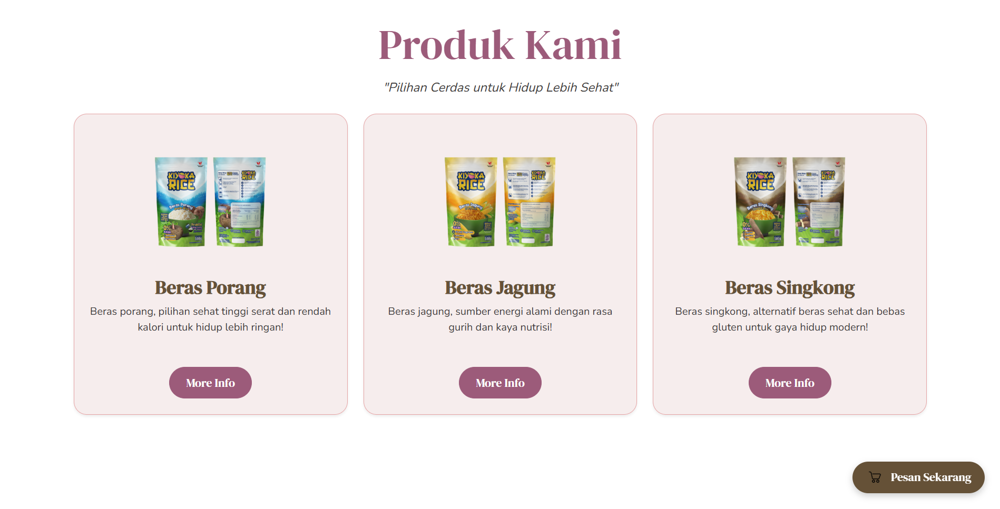
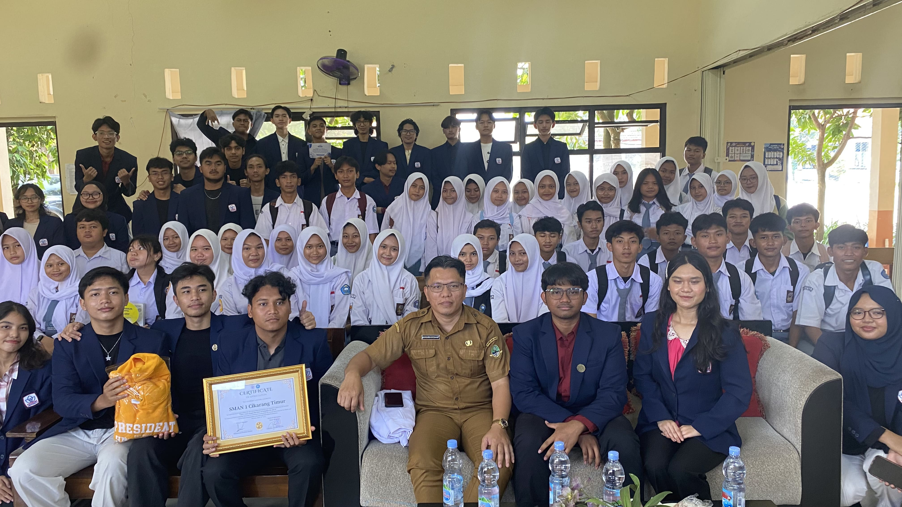
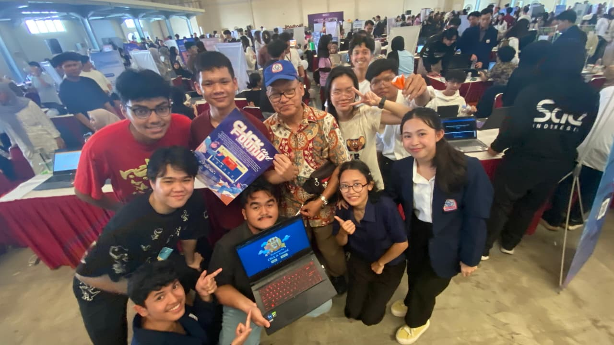

Theodore Fitzgerald Wailan
|
About Me
Driven software development enthusiast focused on web programming. Proven ability to bridge technical execution with cross-functional teamwork through active organizational leadership. Seeking to leverage strong communication skills to add immediate value to a software engineering team.
Core Expertise
Web Development
Security & Forensics
Selected Projects

Kiyoka Rice
Freelance Web Developer

CTRL P + CTRL F
Social Project in the form of a seminar

Click & Found
Economic Survival project
Let's Collaborate!
Interested in discussing research, digital security, or programming projects? Don't hesitate to reach out!